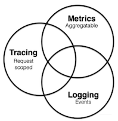
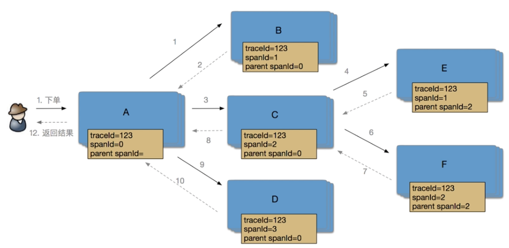
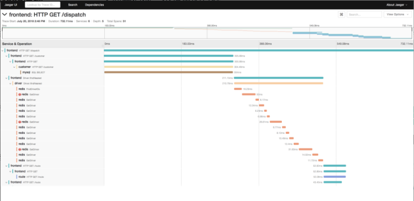
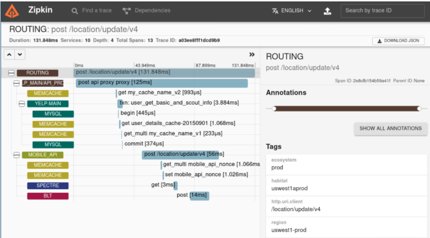
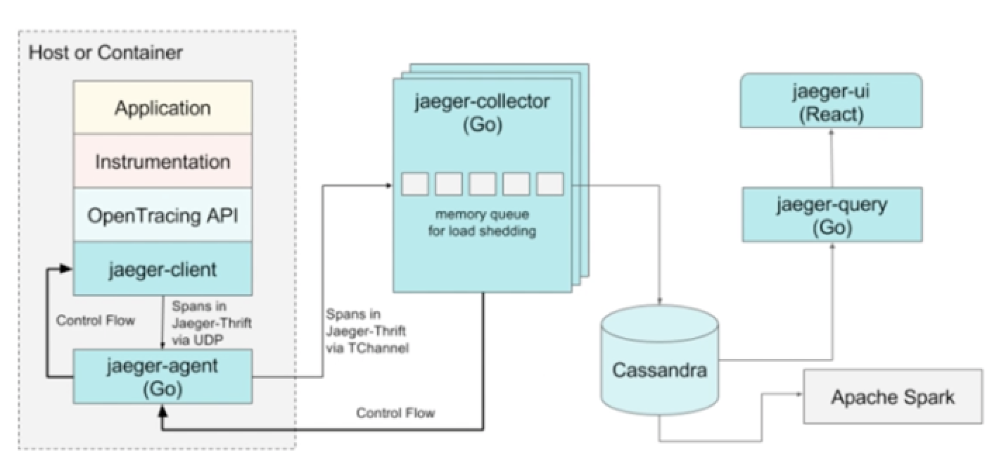
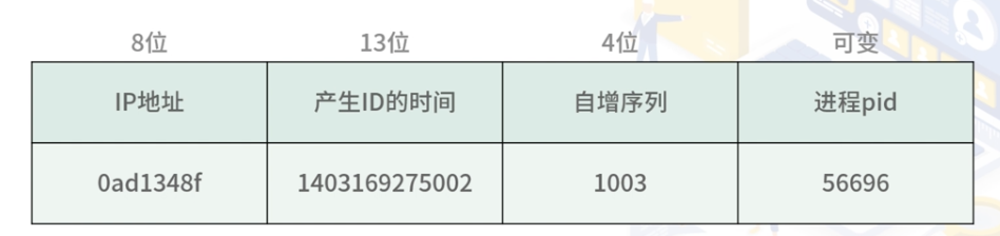
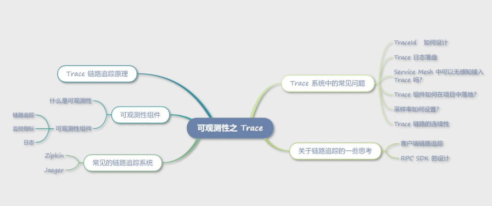

第八节 Trace 更快速定位问题
1、可观测性
提供可观测性功能的组件 Trace。
早期系统架构基本是通过日志组件来观察服务的异常情况，而在云原生模式下，链路追踪、Metrics 和日志三者组成了可观测性组件。
在微服务和 Service Mesh 架构中，可观测性组件的位置变得越来越重要，一般作为默认组件集成在方案中。
可观测性是通过系统输出信息到外部，以检测系统内部的运行状态。比如我们这一讲中的Trace，通过内部打点的方式串联起微服务的各个组件。Metrics，通过输出服务的 Metrics 信息，达到外部监测的目的。
可观测性组件主要有如下三种：链路追踪、监控指标、日志。

- 链路追踪：通过在程序内打点记录日志的方式，记录每次请求的调用链路信息。特点是数据精准、细致，适合查看某一次请求的调用链路，一般用于查看某些响应较慢的接口瓶颈。
- 监控指标：主要是用时序性数据库记录每个时间点的监控数据，一般通过主动拉取服务 Metrics 数据的方式记录，然后实时计算一段时间的数据，并通过图形界面的方式展现出来。它的特点是实时性强、可观测指标丰富，适合查看一段时间内的指标趋势。
- 日志：日志是比较传统的可观测性组件了。 日志的特点是数据比较离散，之间没有关联。当然，我们可以通过在日志中打印 TraceId 和链路追踪关联起来。一般日志要通过日志收集系统使用，比如常见的 ELK 日志系统。
2、链路追踪系统的重要性
- 在微服务架构中，随着服务和中间件数量变多，往往一个接口要请求几十次服务和上百次 DB 才能返回数据，链路过长，很难定位到底是哪个环节出了问题；
- 又或者某个接口延时过高，也很难排查到底是链路中的哪个环节出了问题，这个时候就需要链路追踪系统帮忙了。
3、Trace 链路追踪原理
链路追踪系统基本源于 Google 的一篇 Dapper 论文，这篇论文详细解释了链路追踪的实现原理。
Dapper 通过一个全局唯一的 TraceId 表示请求调用链，并定义了 span，span 表示一次调用（可以是远程调用，也可以程序内的函数调用）。
每个 span 包含了两个重要信息，一个是当前 SpanId，另外一个就是 ParentSpanId。

3-1 Trace 所需的信息传递给被调方服务
通过 HTTP 的 header 头传递下去，当然如果是其他协议，比如 Dubbo，就要想其他办法了。但 gRPC 和 HTTP 相对简单，只要通过 header 传递就可以了。
下面我们看一下这些 header 值的含义。
X-Request-ID：请求 ID，一般 Sidecar 会在入口层生成统一的请求 ID，用于一次请求在内部服务之间传递，方便通过请求 ID 查询一次请求的所有日志。X-B3-TraceId：链路追踪的唯一标识，长度为 64 位。由网关层生成，一次外部请求使用唯一的 TraceId 。X-B3-SpanId：SpanId 的长度是 64 位，表示当前操作在跟踪树中的位置。X-B3-ParentSpanId：父 SpanId，如果该值不存在，表示是根节点。X-B3-Sampled：采样率，当设置为 1 时，表示采样。
一个 Trace 的真实数据
{"duration":2065,"operationName":"/ping","parentSpanID":"0","process.serviceName":"negri.sidecarserverlistener.myapp","process.tags.hostname":"MacBook-Pro-3.local","process.tags.ip":"192.168.1.88","spanID":"5f1db306ef459b2f","startTime":1609241265147010,"tags.http.method":"GET","tags.http.status_code":"200","tags.http.url":"/ping","tags.peer.address":"http://127.0.0.1:8888","tags.span.kind":"server","traceID":"5f1db306ef459b2f"}
接口的运行时间 duration，记录了服务名、TraceId、SpanId、ParentSpanId 等上面我们聊到的常用数据，另外还记录了我们所需要的一些自定义数据，放在了 Tags 字段中。
链路追踪系统，通过收集程序中的打点日志的方式，通常为我们提供了以下功能。
- 排查根因：分析单次请求的调用链路，排查问题根因。
- 调用关系图：通过 Trace 中的服务信息，绘制服务调用关系图。
- 日志追踪：通过关联日志 RequestId，可以链接到日志系统，查看更详细的日志信息。

4、常见的链路追踪系统
4-1 Zipkin
Zipkin是 Twitter 开源的分布式链路追踪系统，属于比较早的 Trace 系统，对 PHP、Golang、Java 都有不错的支持。它提供了一套 Web 图形化界面，供用户查看单条链路信息，也提供了查看调用关系图的功能。

4-2 Jaeger
Jaeger 是 Uber 公司开源的、采用 Go 语言开发的分布式链路追踪系统，由以下几个模块组成。
- jaeger-client：Jaeger 提供的符合 OpenTracing 标准的各种语言的 SDK，包括 Java、Go、Node.js 等。Client 负责收集 Trace 数据发送到 Agent。
- jaeger-agent：jaeger-client 的代理程序，部署在所有宿主机上，这样的目的和 Sidecar 类似，屏蔽了一些路由和 Collector 节点发现的细节，让 Client 更加轻量化。Client 通过 UDP 协议和 Agent 通信，也避免了日志落盘再采集导致的一些性能问题。
- jaeger-collector：负责收集 Agent 上报的链路追踪数据，并做一些数据验证工作，以及对数据做一些处理然后上报到存储系统。
- jaeger-db：后端存储系统，支持 Cassandra 和 ElasticSearch。
- jaeger-query：专门负责调用链查询的一个服务，提供一套独立的 UI 界面，用于绘制调用关系和展示服务链路。
- spark-job：基于 Spark 的运算任务，可以计算服务的依赖关系、调用次数等。

5、Trace 系统中的常见问题
5-1 TraceId 如何设计
TraceId 只要全局唯一就可以了，这里我们可以参考 SOFATrace 中的设计，通过 8 位的 IP 地址和 13 位的时间戳，以及四位的自增序列，加上本身进程的 PID 号，这样组成的字符串就可以保证全局唯一了。

5-2 Trace 日志落盘
阿里云提供的 sls 作为链路追踪的存储系统
用 SDK 将数据直接落盘，以日志的方式存储在磁盘上，然后由 Logtail 将日志收集到 sls，但是这样就产生了日志写盘的性能问题。
如果每条日志都直接落盘，那么系统的 IO 消耗会非常大，所以实践中我采用了异步落盘的机制，减少对业务请求的影响，也同时减少了系统调用和系统 IO 的消耗。
5-3 Service Mesh 中可以无感知接入 Trace 吗？
实际上因为 Service Mesh 经常宣传无侵入的接入方式，这块造成了一定的误解，早期 Istio 文档描述得也不是很清楚，但后面的 Istio 文档做了更正，在 Service Mesh 中只要少量代码就可以接入 Trace 了。
Sidecar 依然依赖应用程序传递 Trace 所需要的 header，但通过 Sidecar 可以简化 Trace 的接入，Trace SDK 只要保证能够将应用程序的 Trace header 在每次请求中传递下去就可以了，而不用负责繁重的数据上报工作。但如果除了服务的链路信息，还希望收集一些 DB 中间件的调用信息，数据上报的工作还是无法避免的。
5-4 Trace 组件如何在项目中落地？
对一些语言来说，侵入性比较强是最大的痛点。对于 Java 相对来说比较容易，可以通过 Java Agent 无感知地接入，但对于其他语言就没那么容易了。
比如 PHP、Go、Node.js 等语言，都需要通过 SDK 的方式接入。如果是在微服务拆分的中后期，想要再增加 Trace 系统就十分困难了，所以这里建议在决定使用微服务架构的初期，在框架内集成 Trace SDK，并默认开启，免去后续的麻烦。
5-5 采样率如何设置？
在 Jaeger 中提供了动态采样率的功能，这样可以保证同一个服务中，低 QPS 的接口可以被有效采集，而高 QPS 的接口有较低的采样率。
5-6 Trace 链路的连续性
网关中生成初始的 TraceId 和最上层的 SpanId，后续的服务只要拿到 downstream 集群，通过 header 传递下来的 Trace 信息，就可以继续生成本服务的 Trace 数据了
像 Jaeger 之类的组件，在没有拿到 Trace 信息的情况下，会默认生成新的 TraceId 。实际上，我并不建议这样的做法，一是增加了 SDK 的复杂度，造成维护困难；二是链路一旦断掉，对于排查问题的帮助就不是很大了。
6、关于链路追踪的一些思考
6-1 客户端链路追踪
链路追踪，主要还是用于内部服务，以展示微服务的调用关系和排查微服务导致的链路复杂性问题。但实际上可以考虑在客户端就生成 client-traceid，然后将 client-traceid 和内部 TraceId 关联起来，这样就能够展示整个链路追踪中客户端耗时占比。
6-2 RPC SDK 的设计
实际上 Trace 系统需要将 Trace header 的信息一层层传递下去，所以 RPC 的 Client SDK 需要具备“在请求的时候带上 Trace 所需信息”的能力。
其实在微服务中，有很多场景需要我们将最顶层的网关层的数据传递下去，以保证上游（upstream）的微服务能够获取这些信息。比如客户端 IP、灰度流量标签等。所以在微服务 SDK 设计的时候最好定义一组 header，方便我们解析并向上游传递，比如 X-Mesh-Xxx。
